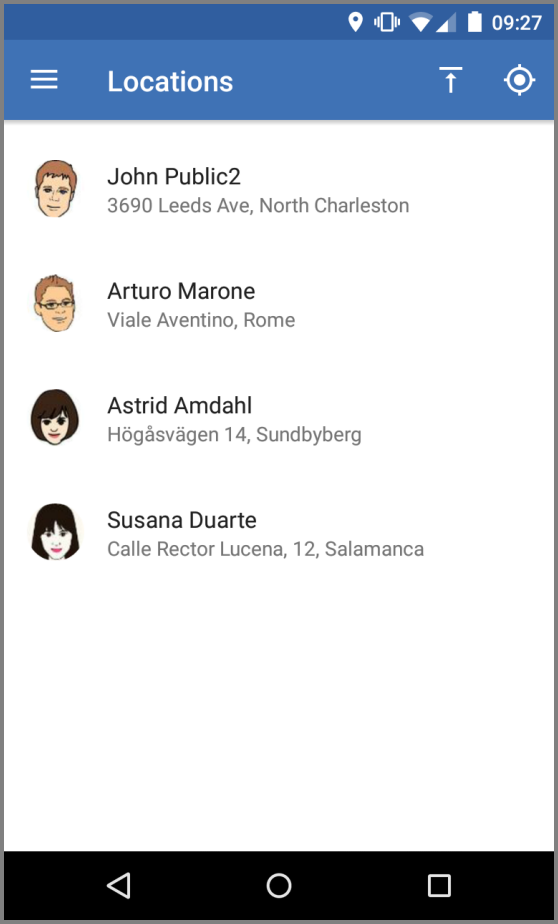

Scenarios
There are two basic scenarios we have for you depending on your needs. It'll help if you keep a copy of the technical terminology handy.

There is a bit of stuff you have to learn about in order to use OwnTracks: MQTT brokers, topics, but the upside is that you get to use many of the neat features MQTT mode or HTTP mode come with. For example, you can set up friends.
HTTP mode
If you don't want to go to the trouble of hosting your own MQTT setup, you can use HTTP mode to publish location data to a HTTP server of your chosing, and you can also use our Recorder for doing so.
MQTT mode
This is where you say adios! (or whatever you say in your language when you leave) to us, continue to use our app (still free of charge of course -- it's Open Source), and host everything yourself. And to be honest, that's precisely what we think you should do so that you only (and the people you authorize) see where you are. That is the Own in OwnTracks: it's your own data and you only should see it.
In MQTT mode you're on your own: you set up and configure your MQTT broker, you configure authentication, and then you configure your OwnTracks apps to connect to your broker. It's not particularly difficult to do, and you have full control over everything you set up.
What you basically have to do is to
- set up an MQTT broker
- Optionally use existing clients to consume OwnTracks data
- Possibly dig in and write your own client and do really cool stuff!
We urge you to resist the temptation of using MQTT mode with one of the many public brokers hosted by different organizations. While it is an easy way out those brokers are publically accessible which means anybody can see where you are if they can identify you. Furthermore, public brokers often don't implement access control, so basically anybody can create a "location" update which looks as though it may be yours. Believe us: it'll drive you crazy.
If you need assistance, we may be able to help you on our Talk site.
You will now want to configure a client with which you consume the data which is published by OwnTracks, or if you're feeling very brave, why not write your own client?
Now it's time to discuss topics.